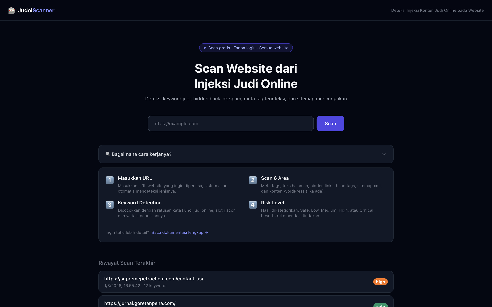

Judol Scanner — AI Gambling Injection Detector
An AI-powered web scanner that detects online gambling content injections on compromised websites — supporting both general websites via HTML UI extraction and WordPress sites via the WP-JSON REST API.

- Role
- Full-stack + AI Dev
- Period
- 2025 – Present
- Target
- WordPress & General
- Status
- In Progress
Background
Online gambling content injection — locally known as judol — is one of the most widespread website compromise attacks in Indonesia. Attackers silently inject gambling keywords, links, and UI elements into legitimate websites, often without the site owner ever noticing. Government sites, university portals, and small business pages are frequent targets.
Existing tools rely on simple keyword blacklists that are trivially bypassed by obfuscated text or dynamically injected content. This project builds a smarter, AI-powered scanner that understands context — not just matching strings — and covers both WordPress and general websites through two dedicated detection strategies.
- Injections often go undetected for months
- Keyword blacklists bypass-able by obfuscation
- No unified tool for both WP and non-WP sites
- Context-aware AI detection, not just keywords
- Two scan modes: General + WordPress-specific
- Simple URL-input interface, no tech expertise needed
Scan Modes
The scanner operates in two distinct modes depending on the target website's platform. Each mode uses a different data extraction strategy to maximize detection coverage.
Works universally on any website regardless of platform. The scanner fetches the page HTML, then parses and extracts the rendered UI text — headings, paragraphs, link anchors, button labels, and visible content blocks — stripping away structural tags to isolate the actual human-readable content that would appear to visitors.
Tailored specifically for WordPress sites. Instead of parsing rendered HTML, this mode queries the native WP-JSON REST API to pull raw post and page content directly from the database layer — catching injections that may be hidden from the rendered view but still present in the stored content.
How It Works
User submits a target URL. The system auto-detects whether the site runs on WordPress by probing the /wp-json/ endpoint. Based on the result, it routes to the appropriate scan mode automatically — no manual selection required.
General: Fetches raw HTML and uses BeautifulSoup to extract visible UI text — stripping scripts, styles, and structural tags to isolate what users actually see on the page.
WordPress: Calls the WP-JSON REST API to retrieve post and page content objects directly, providing access to raw stored content that may differ from the rendered view.
Extracted content is passed through the AI model, which classifies whether gambling injection is detected. Unlike keyword blacklists, the model understands context — it recognises obfuscated terms, gambling-adjacent language patterns, and injection signatures that simple string matching would miss.
The scanner returns a structured result — detection verdict (clean / infected), confidence score, flagged content excerpts, and the specific pages or posts where injections were found. WordPress scans include per-post granularity so site owners know exactly which content was compromised.
What Gets Detected
The model is trained to recognise a range of gambling injection signatures commonly used in Indonesian online gambling spam attacks.
Slot, togel, casino, jackpot, situs judi, and related terms — including obfuscated and leet-speak variants.
Hidden anchor tags pointing to gambling domains, often buried in page footers or injected into existing content blocks.
Injected banners, buttons, and promotional text blocks that render visually on the page but are out of place with the site's original content.
Gambling-related articles or posts injected into the WordPress database — designed to boost SEO for gambling sites while damaging the host site's reputation.